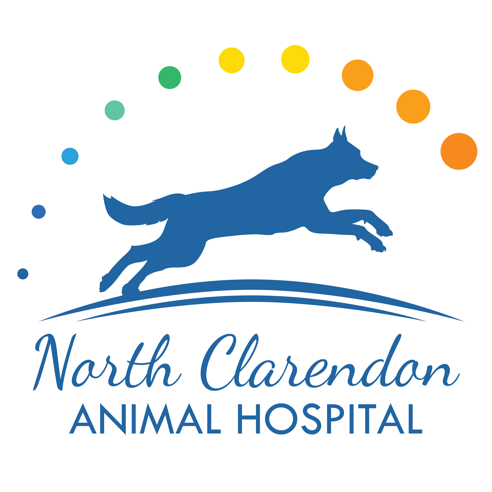
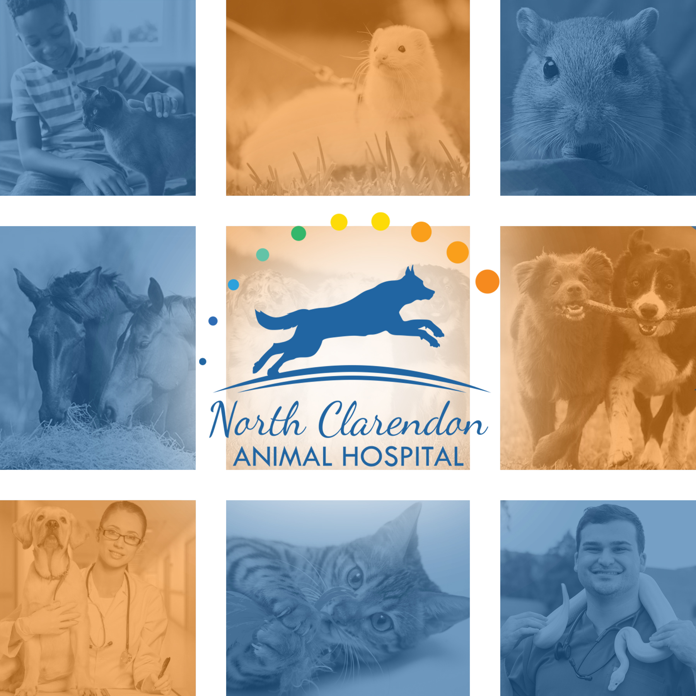
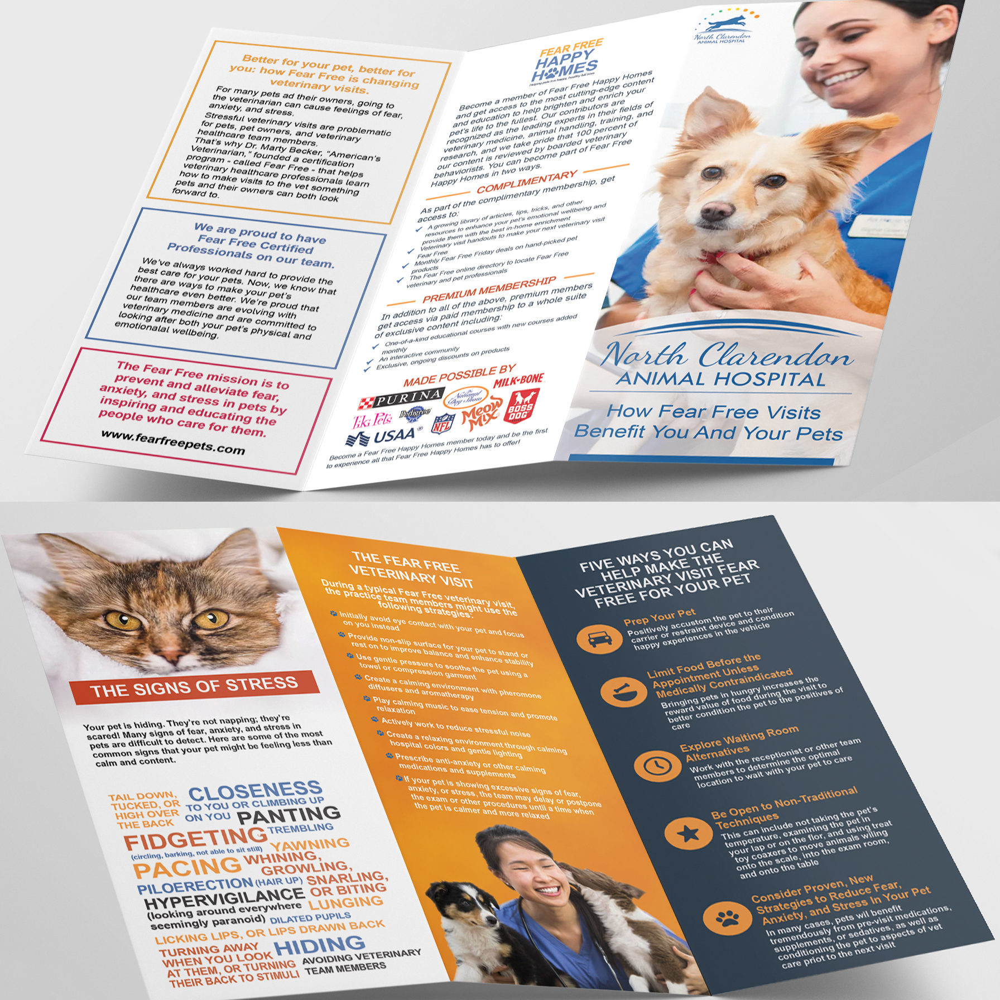

Main Logo for North Clarendon Animal Hospital.
Wanted to create a crand that is friendly, warm and welcoming.
The main idea is a happy, healthy dog chasing a thrown ball.

The main Logo in front of a mosaic of healthy pets.
This is to demenstrate the logo's versatility and show it on several backgrounds, including on the main colors.

An example of the kind of brochure the North Clarendon Animal Hospital might have in it's office.
Wanted to focus on getting across several bits of information while staying true to brand.

A mockup of the North Clarendon Animal Hospital's website.
The three screens show what the site would look like on different sized screens, from laptop, to iPad, to phone.